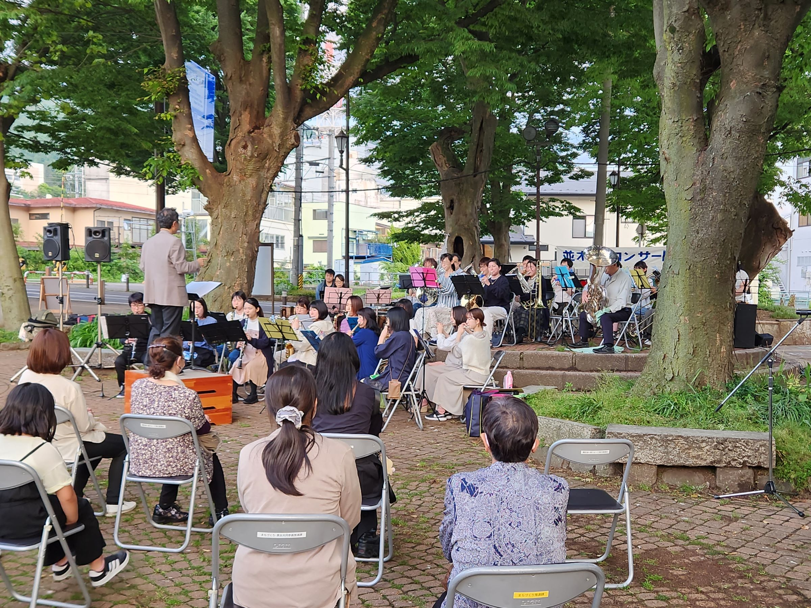
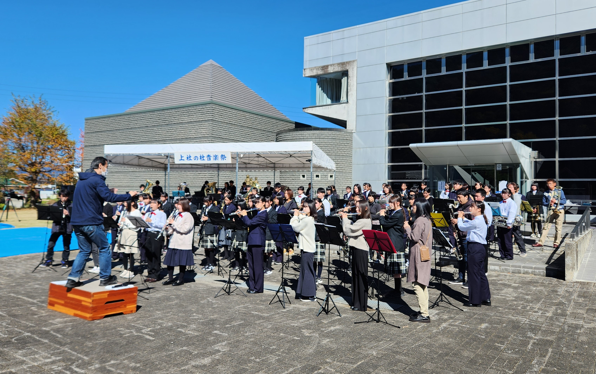

コンサート報告（2023年）
2025年 ｜
2024年 ｜
2023年 ｜
2022年
2021年 ｜
2020年 ｜
2019年 ｜
2018年 ｜
2017年
2016年 ｜
2015年 ｜
2014年 ｜
2013年 ｜
2012年
2011年 ｜
2010年 ｜
2009年 ｜
2008年 ｜
2007年
2006年 ｜
2005年 ｜
2004年 ｜
2003年 ｜
2002年
並木DEコンサート 演奏終了（2023.5.20）
 今年度１回目の「並木DEコンサート」に、本年も出演させていただきました。好天にも恵まれ、立ち見も含めて多くのお客様にご来場いただきました。
ここ数年は縮小開催でしたが、今回はほぼ従来の形式に戻して開催することができ、私たちも楽しく演奏することができました。主催者の方によれば、当団は26年連続26回目の出演とのこと・・・。開催にあたりご尽力いただいた多くの皆様に御礼申し上げます。
第29回上社の杜音楽祭 演奏終了（2023.10.22）
秋の快晴の下、今年も屋外でのコンサートを開催することができました。当団と各中学校吹奏楽部の演奏の後、4年ぶりに合同演奏が復活。80人で「ふるさと」を演奏し、会場の皆さんにも歌で参加していただきました。わずか1日だけの合同演奏でしたが、中学生の皆さんに「大人数で演奏して楽しかった」と思っていただければ幸いです。たくさんのお客様のご来場、誠にありがとうございました。
第29回定期演奏会 演奏終了（2023.12.3）
当団最大の行事、定期演奏会。今年は4年ぶりに入場制限などもなく、通常の宣伝活動や準備活動を実施しました。当日のステージ後半はディズニー100周年を記念したディズニー音楽特集とし、恒例の楽器紹介コーナーも復活させました。
年末の忙しい時期にもかかわらず、おかげさまで480名近くのお客様にご来場いただき、会場を埋めた多くのお客様の前で楽しく演奏することができました。誠にありがとうございました。これを励みに、今後も諏訪地区で楽しい演奏を奏でていきたいと思っております。今後とも諏訪市吹を、どうぞよろしくお願いいたします。